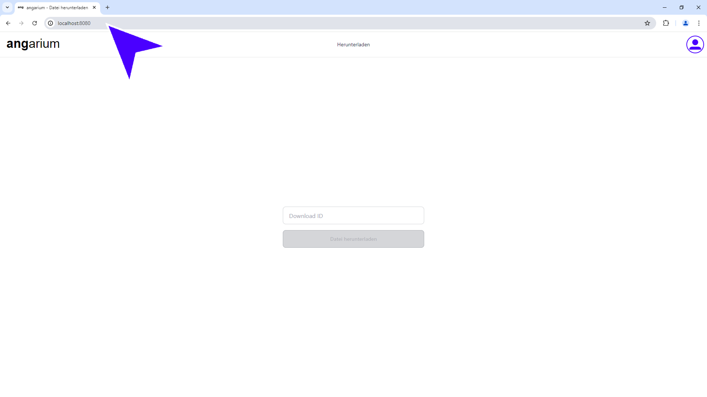
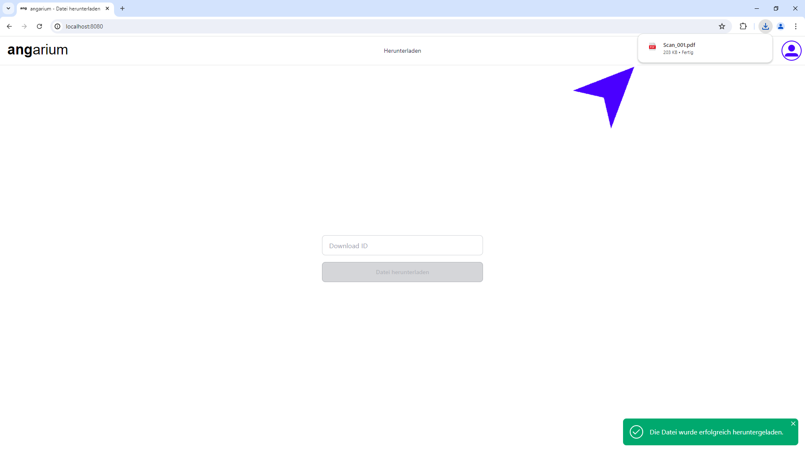
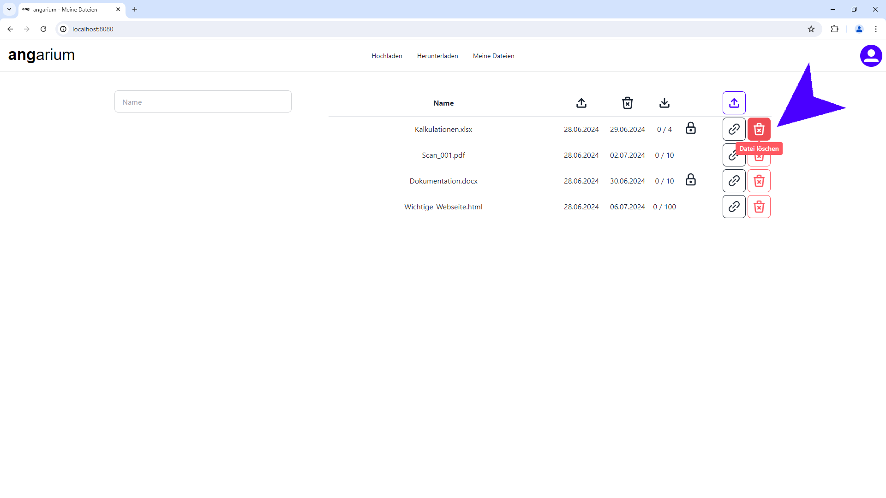

angarium Benutzerhandbuch
Bastian Schmidt & Julius Venier
Anmeldung
1. Fahren Sie mit der Maus auf das Benutzer Symbol.
{kind=link}
2. Klicken Sie auf „Anmelden“ um das Anmeldefenster zu öffnen.
{kind=link}
3. Geben Sie nun Ihren „Benutzernamen“ und Ihr „Passwort“ ein.
{kind=link}
4. Abschließend klicken Sie auf den Button „Einloggen“, um sich anzumelden.
{kind=link}
5. Jetzt sollte die Anmeldung erfolgen!
{kind=link}
Datei hochladen
1. Klicken Sie in der Navigationsleiste auf „Hochladen“.
{kind=link}
2. Klicken Sie zuerst auf „Datei auswählen“, um die hochzuladende Datei auszuwählen.
{kind=link}
3. Wählen Sie aus dem Fenster Ihre Datei aus.
{kind=link}
4. Kontrollieren Sie den Namen der Datei und ändern Sie diesen falls nötig.

5. Klicken Sie auf den Button „Tage verfügbar“ und wählen Sie aus wie lange Ihre Datei verfügbar sein soll.
{kind=link}
6. Tragen Sie ein, wie oft Ihre Datei maximal heruntergeladen werden darf.
{kind=link}
7. [Optional] Wenn Sie Ihre Datei mit einem Passwort schützen wollen, klicken Sie auf Datei mit Passwort schützen und geben Sie ein Passwort ein.
{kind=link}
8. Nachdem Sie alle Eingaben kontrolliert haben, können Sie die Datei hochladen.
{kind=link}
9. Nach dem Hochladen wird unten der Link zum Herunterladen der Datei generiert.
Mit dem Button kann der Link direkt in die Zwischenablage kopiert und an Kollegen weitergesendet werden.
{kind=link}
Datei herunterladen
1. Wenn Sie einen URL von jemandem erhalten, können Sie diesen direkt oben in die Adresszeile kopieren. (Die URL sieht wie folgendes Beispiel aus „../download?id=b81e6680-886f-47c3-a298-112c35e9c2d1“)
{kind=link}
2. Drücken Sie nun Enter und die „Download ID“ wird vorgefüllt.
{kind=link}
3. Sollten Sie ein ID erhalten haben, müssen Sie zur Downloadseite manuell navigieren.
{kind=link}
4. Nun können Sie die erhaltene ID in dem Feld „Download ID“ eingeben.
{kind=link}
5. Wenn Sie die ID falsch eingeben, erhalten Sie folgende Fehlermeldung
{kind=link}
6. Bei einer Passwort geschützten Datei müssen Sie das richtige Passwort eingeben. Das Passwort erhalten Sie von der Person, die die Datei hochgeladen hat.
{kind=link}
7. Sobald alle Eingaben gemacht wurden, kann die Datei heruntergeladen werden.
{kind=link}
8. Ihre Datei wird über den Browser heruntergeladen.
{kind=link}
Meine Dateien
1. Klicken Sie in der Navigationsleiste auf „Meine Dateien“.
{kind=link}
2. Auf dieser Seite sehen alle Ihre hochgeladenen Dateien und die Informationen zu diesen.
{kind=link}
3. In der ersten Spalte wird der Name der Datei angezeigt.
{kind=link}
4. Die zweite Spalte zeigt das hochlade Datum.
{kind=link}
5. Spalte drei zeigt das Datum an dem die Datei automatisch vom System gelöscht wird.
{kind=link}
6. Die vierte Spalte zeigt links wie oft die Datei schon heruntergeladen wurde, und rechts wie oft die Datei maximal heruntergeladen werden darf.
{kind=link}
7. Der letzte Button in der Kopfzeile leitet Sie zur „Datei hochladen“ Seite weiter.
{kind=link}
8. Über das Eingabefeld kann die Liste der Dateien auf den Dateinamen gefiltert werden.
{kind=link}
9. Die Liste filtert dynamisch beim Ändern der Eingabe.
{kind=link}
10. Mit dem schwarzen „Link“ Button kann der Download Link der Datei in die Zwischenablage kopiert werden.
{kind=link}
11. Mit dem roten Button am Ende kann die Datei gelöscht werden
{kind=link}
12. Bevor die Datei gelöscht wird, muss das Löschen nocheinmal bestätigt werden!

13. Folgende Nachricht wird beim erfolgreichen löschen angezeigt.
{kind=link}
Benutzer Profil
1. Fahren Sie mit der Maus auf das Benutzer Symbol.
{kind=link}
2. Klicken Sie auf Ihren Benutzernamen.
{kind=link}
3. Ganz oben auf Ihrem Benutzerprofil sehen Sie, ob Ihr Benutzer ein Administrator ist. Ist dies nicht der Fall, ist dieser „admin“ Hinweis nicht zu sehen. Ein Administrator kann keine Dateien Hochladen, jedoch kann er die Benutzerprofile verwalten!
{kind=link}
4. Unter „Benutzername“ steht Ihr jetziger Benutzername, wird dieser geändert, erscheint der alte Benutzername in Gelb unter dem Feld.
{kind=link}
5. Im Eingabefeld „altes Passwort“, müssen Sie immer Ihr aktuelles Passwort eingeben (diese wird fürs Änder der Benutzerdaten immer benötigt).
{kind=link}
6. [Optional] Sie können auch Ihr Passwort ändern. Dazu müssen Sie in die beiden Felder „neues Passwort“ und „neues Passwort wiederholen“ das neue Passwort eingeben (diese Passwörter müssen übereinstimmen).
{kind=link}
7. Klicken Sie nach dem kontrollieren der Daten auf „Anmeldedaten änder“.
{kind=link}
8. Stimmen die 2 Felder für das neue Passwort nicht überein, wird eine Fehlermeldung ausgegeben.
{kind=link}
9. Kontrollieren Sie deshalb, ob beide neuen Passwörter gleich sind!
{kind=link}
10. Wenn alle Eingaben stimmen, wird eine Nachricht ausgegeben.
{kind=link}
Benutzer Verwaltung
1. Die Benutzer Verwaltung ist nur für den Administrator verfügbar!
Klicken Sie in der Navigationsleiste auf „Benutzer Verwaltung“.
{kind=link}
2. In der Benutzerverwaltung werden alle angelegten Benutzer in einer Liste angezeigt.
{kind=link}
3. Die erste Spalte zeigt die ID, an dieser können Sie die Anlegereihenfolge der Benutzer nachvollziehen. (Wenn Benutzer gelöscht wurden, können Nummerierungen jedoch fehlen!)
{kind=link}
4. In Spalte zwei wird der Benutzername angezeigt. Dieser wird zum anmelden am System verwendet.
{kind=link}
5. Beim Administrator Benutzer wird hinter dem Benutzernamen eine kleine „admin“ Information angezeigt. Der Admin Benutzer kann nicht gelöscht werden!
{kind=link}
6. Links kann in dem Feld „Benutzername“ nach dem Namen gefiltert werden.
{kind=link}
7. Um das Passwort zurückzusetzen, klicken Sie auf den schwarzen Button mit dem runden Pfeil.
{kind=link}
8. Bevor das Passwort zurückgesetzt wird, müssen Sie die Aktion bestätigen.

9. Wenn das Passwort erfolgreich zurückgesetzt wurde, wird eine Information ausgegeben. Das Passwort wird automatisch auf das (in der Serverkonfiguration) festgelegte Passwort gesetzt.
{kind=link}
10. Um den Benutzer zu löschen, klicken Sie auf den Button mit dem roten Papierkorb.
{kind=link}
11. Auch hier müssen Sie die Aktion wieder bestätigen.
{kind=link}
12. Bei erfolgreichem Löschen wird wieder eine Information ausgegeben.
{kind=link}
13. Mit dem grünen Button rechts oben können Sie neue Benutzer anlegen.
{kind=link}
14. Sie müssen nur einen Benutzernamen eingeben. Das Passwort wird automatisch auf das (in der Serverkonfiguration) festgelegte Passwort gesetzt.
{kind=link}
15. Mit dem blauen Button Links kann der neue Benutzer gespeichert werden.

16. Der rote Button links bricht die Anlage des Benutzers ab.
{kind=link}
17. Nach dem erfolgreichen anlegen wird eine Information ausgegeben.
{kind=link}